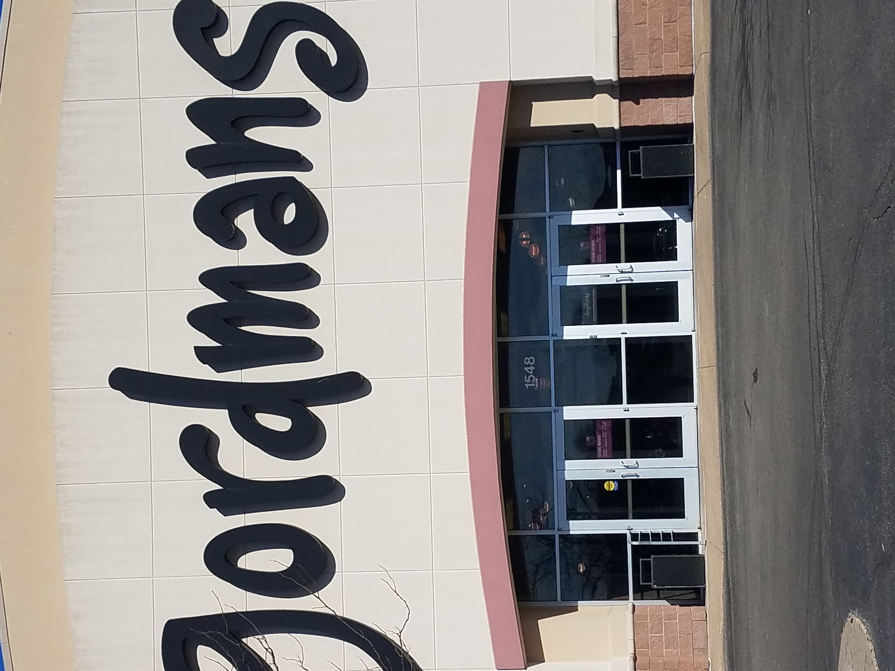
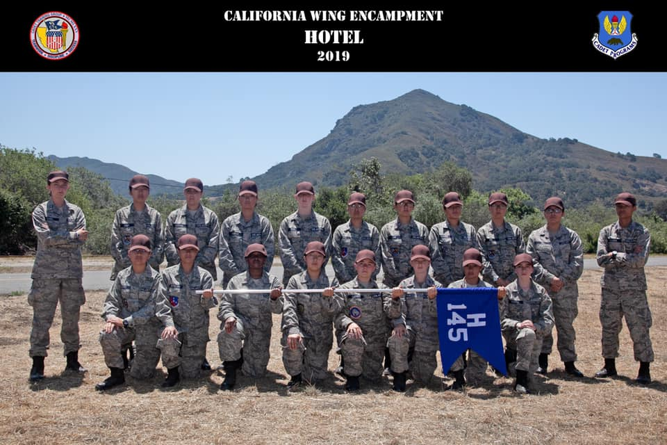
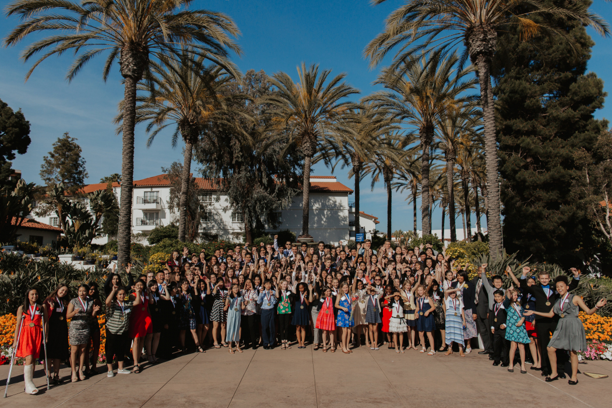

Mae Hong
Science Loving Student
About
Passionate and motivated scientist with moderate mentoring and tutoring experience. Proficiency with managing unexpected complications at work, and competent at developing ideas into successful projects. A charismatic and resilient leader and collaborator.
Skills
Individual instruction
Team building
Data analysis
Lesson planning
Research
Cooperation
Project Management
Leadership
Biology
Geology
Chemistry
Geochemistry
Biochemistry
Forensic Sciences
Genetics
Molecular Biology
Physics
Math
Stress Management
Korean
Chinese
World History
Art History
Architecture
Lab Techniques
Poster Presentation
English
Writing
Reading
Painting
Relevant Experience (10 Years)
AMAZE INSTITUTE
10/2019 — Present
Special Education Volunteer | San Diego, CA
- Organized instruction material, including setting and cleaning up work areas
- Cultivated connections and strong student rapport to foster classroom engagement, in addition to recording student progress to inform parents and administration
- Assisted Class Teacher with planning and coordinating fellow volunteers
- Devoted special emphasis to punctuality and worked to maintain outstanding attendance record, consistently arriving to work ready to start immediately
Contact: Principle, AMAZE INSTITUTE
CIVIL AIR PATROL
09/2017 — Present
Flight Sergent | Carlsbad, CA
- Communicated with superiors to plan and generate activities for the flight and Squadron
- Managed weekly attendance for cadets in the flight
- Taught junior cadets skills and information necessary for participation and promotion within the Squadron
- Responsible for leading and guiding 7 junior cadets through their CAP career
Contact: Officer, CAP
San Elijo Middle School
09/2017 — 06/2018
Achievements / Tasks
- Carson Scholarship, 2018
Contact: History teacher
Education
San Marcos High School
09/2018 — 06/2022
- Member of Civil Air Patrol (Air Force Auxiliary)
- Tech Editor of Key Club (Volunteer Organization)
- Member of California Scholarship Federation (CSF)
- Member of BE WiSE (Woman in Science and Engineering)
- Secretary of the Marketing Team in BE WiSE Teen Cafe
- Qualified for the Honor Roll certificate in San Marcos High School
- Received Carson Scholarship (3-time consecutively)
- Elected to Tech Editor for Key Club in 2020
Awarded Honor Cadet of Echo Flight in Airman Training School
San Elijo Middle School
06/2017 — 06/2018
Math & Science
Kinnikinnick Middle School
09/2015 — 06/2017
School Education
Achievements
- Science Olympiad, 2017
- Science Olympiad, 2018
Personal Projects



Civic Air Patrol
I have been taking my leadership roles in Civil Air Patrol.
Stars:
100
Watchers:
100
Forks:
100

Key Club
My extracurriculum is filled with volunteering to our community.
Stars:
100
Watchers:
100
Forks:
100
AFFILIATIONS AND CERTIFICATIONS
- Member, Civil Air Patro (CAP), 2017 - Present
- Volunteer, Academy of Music and Art for Special Education (AMASE), 2019 - Present
- Member, Better Education for Women in Science and Engineering (BE WiSE), 2018 - Present
- General Emergency Services Qualification
Languages
English
Korean
Chinese
Interests
- Hiking
- Learning new stuff
- Building stuff
- Playing piano
- Reading
- Listening to music
- Painting
- Swimming
- Writing a novel
- Gardening
- Killing bugs